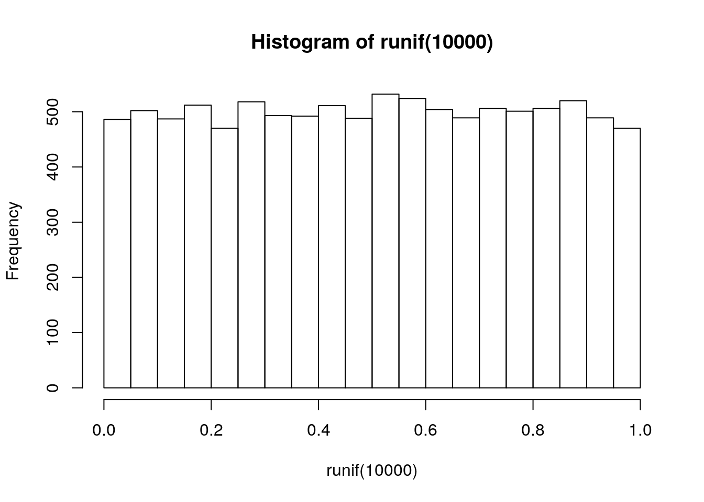

Last updated: 2019-02-26
Checks: 6 0
Knit directory: dc-bioc-limma/analysis/
This reproducible R Markdown analysis was created with workflowr (version 1.2.0.9000). The Report tab describes the reproducibility checks that were applied when the results were created. The Past versions tab lists the development history.
Great! Since the R Markdown file has been committed to the Git repository, you know the exact version of the code that produced these results.
Great job! The global environment was empty. Objects defined in the global environment can affect the analysis in your R Markdown file in unknown ways. For reproduciblity it’s best to always run the code in an empty environment.
The command set.seed(12345) was run prior to running the code in the R Markdown file. Setting a seed ensures that any results that rely on randomness, e.g. subsampling or permutations, are reproducible.
Great job! Recording the operating system, R version, and package versions is critical for reproducibility.
Nice! There were no cached chunks for this analysis, so you can be confident that you successfully produced the results during this run.
Great! You are using Git for version control. Tracking code development and connecting the code version to the results is critical for reproducibility. The version displayed above was the version of the Git repository at the time these results were generated.
Note that you need to be careful to ensure that all relevant files for the analysis have been committed to Git prior to generating the results (you can use wflow_publish or wflow_git_commit). workflowr only checks the R Markdown file, but you know if there are other scripts or data files that it depends on. Below is the status of the Git repository when the results were generated:
Ignored files:
Ignored: .Rhistory
Ignored: .Rproj.user/
Untracked files:
Untracked: analysis/table-s1.txt
Untracked: analysis/table-s2.txt
Untracked: code/tb-scratch.R
Untracked: data/counts_per_sample.txt
Untracked: docs/style.css
Untracked: docs/table-s1.txt
Untracked: docs/table-s2.txt
Untracked: factorial-dox.rds
Note that any generated files, e.g. HTML, png, CSS, etc., are not included in this status report because it is ok for generated content to have uncommitted changes.
These are the previous versions of the R Markdown and HTML files. If you’ve configured a remote Git repository (see ?wflow_git_remote), click on the hyperlinks in the table below to view them.
| File | Version | Author | Date | Message |
|---|---|---|---|---|
| html | 2372aa1 | John Blischak | 2019-01-09 | Build site. |
| html | f440a87 | John Blischak | 2018-08-20 | Build site. |
| html | ad13021 | John Blischak | 2018-08-02 | Build site. |
| Rmd | 50e1949 | John Blischak | 2018-08-02 | Increase text size of boxplots. |
| Rmd | 010a04c | John Blischak | 2018-08-02 | Convert vdx analysis to Rmd and increase font size in figs. |
Study of breast cancer:
library(Biobase)
library(breastCancerVDX)data("vdx")
class(vdx)[1] "ExpressionSet"
attr(,"package")
[1] "Biobase"dim(vdx)Features Samples
22283 344 pData(vdx)[1:3, ] samplename dataset series id filename size age er grade pgr
VDX_3 VDX_3 VDX VDX 3 GSM36793.CEL.gz NA 36 0 NA NA
VDX_5 VDX_5 VDX VDX 5 GSM36796.CEL.gz NA 47 1 3 NA
VDX_6 VDX_6 VDX VDX 6 GSM36797.CEL.gz NA 44 0 3 NA
her2 brca.mutation e.dmfs t.dmfs node t.rfs e.rfs treatment tissue
VDX_3 NA NA 0 3072 0 NA NA 0 1
VDX_5 NA NA 0 3589 0 NA NA 0 1
VDX_6 NA NA 1 274 0 NA NA 0 1
t.os e.os
VDX_3 NA NA
VDX_5 NA NA
VDX_6 NA NAfData(vdx)[1:3, 1:5] probe Gene.title
1007_s_at 1007_s_at discoidin domain receptor tyrosine kinase 1
1053_at 1053_at replication factor C (activator 1) 2, 40kDa
117_at 117_at heat shock 70kDa protein 6 (HSP70B')
Gene.symbol Gene.ID EntrezGene.ID
1007_s_at DDR1 780 780
1053_at RFC2 5982 5982
117_at HSPA6 3310 3310x <- exprs(vdx)
f <- fData(vdx)
p <- pData(vdx)
f <- f[, c("Gene.symbol", "EntrezGene.ID", "Chromosome.location")]
colnames(f) <- c("symbol", "entrez", "chrom")
# Recode er as 0 = negative and 1 = positive
p[, "er"] <- ifelse(p[, "er"] == 0, "negative", "positive")
p <- p[, c("id", "age", "er")]boxplot(x[1, ] ~ p[, "er"], main = f[1, "symbol"])
eset <- ExpressionSet(assayData = x,
phenoData = AnnotatedDataFrame(p),
featureData = AnnotatedDataFrame(f))
dim(eset)Features Samples
22283 344 boxplot(exprs(eset)[1, ] ~ pData(eset)[, "er"],
main = fData(eset)[1, "symbol"])
design <- model.matrix(~er, data = pData(eset))
head(design, 2) (Intercept) erpositive
VDX_3 1 0
VDX_5 1 1colSums(design)(Intercept) erpositive
344 209 table(pData(eset)[, "er"])
negative positive
135 209 library(limma)
Attaching package: 'limma'The following object is masked from 'package:BiocGenerics':
plotMAfit <- lmFit(eset, design)
head(fit$coefficients, 3) (Intercept) erpositive
1007_s_at 11.725148 0.09878782
1053_at 8.126934 -0.54673000
117_at 7.972049 -0.17342654fit <- eBayes(fit)
head(fit$t, 3) (Intercept) erpositive
1007_s_at 276.8043 1.817824
1053_at 122.5899 -6.428278
117_at 164.0240 -2.781294results <- decideTests(fit[, "erpositive"])
summary(results) erpositive
Down 6276
NotSig 11003
Up 5004design <- model.matrix(~0 + er, data = pData(eset))
head(design) ernegative erpositive
VDX_3 1 0
VDX_5 0 1
VDX_6 1 0
VDX_7 1 0
VDX_8 1 0
VDX_9 0 1colSums(design)ernegative erpositive
135 209 library(limma)
cm <- makeContrasts(status = erpositive - ernegative,
levels = design)
cm Contrasts
Levels status
ernegative -1
erpositive 1fit <- lmFit(eset, design)
head(fit$coefficients) ernegative erpositive
1007_s_at 11.725148 11.823936
1053_at 8.126934 7.580204
117_at 7.972049 7.798623
121_at 10.168975 10.086393
1255_g_at 5.903189 5.729195
1294_at 9.166436 9.390949fit2 <- contrasts.fit(fit, contrasts = cm)
head(fit2$coefficients) Contrasts
status
1007_s_at 0.09878782
1053_at -0.54673000
117_at -0.17342654
121_at -0.08258267
1255_g_at -0.17399402
1294_at 0.22451339fit2 <- eBayes(fit2)
results <- decideTests(fit2)
summary(results) status
Down 6276
NotSig 11003
Up 5004topTable(fit2) symbol entrez chrom logFC AveExpr t
205225_at ESR1 2099 6q25.1 3.762901 11.377735 22.68392
209603_at GATA3 2625 10p15 3.052348 9.941990 18.98154
209604_s_at GATA3 2625 10p15 2.431309 13.185334 17.59968
212956_at TBC1D9 23158 4q31.21 2.157435 11.702942 17.48711
202088_at SLC39A6 25800 18q12.2 1.719680 13.119496 17.30104
212496_s_at KDM4B 23030 19p13.3 1.459843 10.703942 16.85070
215867_x_at CA12 771 15q22 2.246120 11.450485 16.79123
209602_s_at GATA3 2625 10p15 2.921505 9.547850 16.43202
212195_at IL6ST 3572 5q11 1.381778 11.737839 16.31864
218195_at C6orf211 79624 6q25.1 1.738740 9.479901 16.27378
P.Value adj.P.Val B
205225_at 2.001001e-70 4.458832e-66 149.19866
209603_at 1.486522e-55 1.656209e-51 115.46414
209604_s_at 5.839050e-50 4.337052e-46 102.75707
212956_at 1.665700e-49 9.279201e-46 101.72268
202088_at 9.412084e-49 4.194589e-45 100.01376
212496_s_at 6.188671e-47 2.298369e-43 95.88265
215867_x_at 1.074845e-46 3.421537e-43 95.33780
209602_s_at 3.004184e-45 8.367780e-42 92.05058
212195_at 8.581176e-45 2.124604e-41 91.01458
218195_at 1.299472e-44 2.895613e-41 90.60496For Ch3 L2 plotMDS/removeBatchEffect
stats <- topTable(fit2, number = nrow(fit2), sort.by = "none")
dim(stats)[1] 22283 9hist(runif(10000))
hist(stats[, "P.Value"])
volcanoplot(fit2, highlight = 5, names = fit2$genes[, "symbol"])
topTable(fit2, number = 3) symbol entrez chrom logFC AveExpr t P.Value
205225_at ESR1 2099 6q25.1 3.762901 11.37774 22.68392 2.001001e-70
209603_at GATA3 2625 10p15 3.052348 9.94199 18.98154 1.486522e-55
209604_s_at GATA3 2625 10p15 2.431309 13.18533 17.59968 5.839050e-50
adj.P.Val B
205225_at 4.458832e-66 149.1987
209603_at 1.656209e-51 115.4641
209604_s_at 4.337052e-46 102.7571# 1000 genes (10% in gene set), 100 are DE (10% in gene set)
fisher.test(matrix(c(10, 100, 90, 900), nrow = 2))
Fisher's Exact Test for Count Data
data: matrix(c(10, 100, 90, 900), nrow = 2)
p-value = 1
alternative hypothesis: true odds ratio is not equal to 1
95 percent confidence interval:
0.4490765 2.0076377
sample estimates:
odds ratio
1 # 1000 genes (10% in gene set), 100 are DE (30% in gene set)
fisher.test(matrix(c(30, 100, 70, 900), nrow = 2))
Fisher's Exact Test for Count Data
data: matrix(c(30, 100, 70, 900), nrow = 2)
p-value = 1.88e-07
alternative hypothesis: true odds ratio is not equal to 1
95 percent confidence interval:
2.306911 6.320992
sample estimates:
odds ratio
3.850476 head(fit2$genes, 3) symbol entrez chrom
1007_s_at DDR1 780 6p21.3
1053_at RFC2 5982 7q11.23
117_at HSPA6 3310 1q23entrez <- fit2$genes[, "entrez"]
enrich_kegg <- kegga(fit2, geneid = entrez, species = "Hs")
topKEGG(enrich_kegg, number = 4) Pathway N Up Down
path:hsa04110 Cell cycle 115 30 82
path:hsa05166 Human T-cell leukemia virus 1 infection 202 49 124
path:hsa05169 Epstein-Barr virus infection 194 37 114
path:hsa04218 Cellular senescence 145 32 88
P.Up P.Down
path:hsa04110 0.7955186 8.108269e-16
path:hsa05166 0.9496029 4.456075e-15
path:hsa05169 0.9995466 3.656613e-12
path:hsa04218 0.9784768 9.991751e-11enrich_go <- goana(fit2, geneid = entrez, species = "Hs")
topGO(enrich_go, ontology = "BP", number = 3) Term Ont N Up Down P.Up P.Down
GO:0002376 immune system process BP 2337 528 1096 1 1.041713e-41
GO:0006955 immune response BP 1624 322 797 1 1.403459e-37
GO:0045321 leukocyte activation BP 1015 216 507 1 1.434672e-25
sessionInfo()R version 3.5.2 (2018-12-20)
Platform: x86_64-pc-linux-gnu (64-bit)
Running under: Ubuntu 18.04.2 LTS
Matrix products: default
BLAS: /usr/lib/x86_64-linux-gnu/atlas/libblas.so.3.10.3
LAPACK: /usr/lib/x86_64-linux-gnu/atlas/liblapack.so.3.10.3
locale:
[1] LC_CTYPE=en_US.UTF-8 LC_NUMERIC=C
[3] LC_TIME=en_US.UTF-8 LC_COLLATE=en_US.UTF-8
[5] LC_MONETARY=en_US.UTF-8 LC_MESSAGES=en_US.UTF-8
[7] LC_PAPER=en_US.UTF-8 LC_NAME=C
[9] LC_ADDRESS=C LC_TELEPHONE=C
[11] LC_MEASUREMENT=en_US.UTF-8 LC_IDENTIFICATION=C
attached base packages:
[1] parallel stats graphics grDevices utils datasets methods
[8] base
other attached packages:
[1] limma_3.38.3 breastCancerVDX_1.20.0 Biobase_2.42.0
[4] BiocGenerics_0.28.0
loaded via a namespace (and not attached):
[1] Rcpp_1.0.0 AnnotationDbi_1.44.0 knitr_1.21
[4] whisker_0.3-2 magrittr_1.5 workflowr_1.2.0.9000
[7] IRanges_2.16.0 bit_1.1-14 org.Hs.eg.db_3.7.0
[10] blob_1.1.1 stringr_1.4.0 tools_3.5.2
[13] xfun_0.5 DBI_1.0.0 git2r_0.24.0
[16] htmltools_0.3.6 bit64_0.9-7 yaml_2.2.0
[19] rprojroot_1.2 digest_0.6.18 S4Vectors_0.20.1
[22] fs_1.2.6 memoise_1.1.0 RSQLite_2.1.1
[25] glue_1.3.0 evaluate_0.13 rmarkdown_1.11
[28] stringi_1.3.1 compiler_3.5.2 GO.db_3.7.0
[31] backports_1.1.3 stats4_3.5.2 pkgconfig_2.0.2